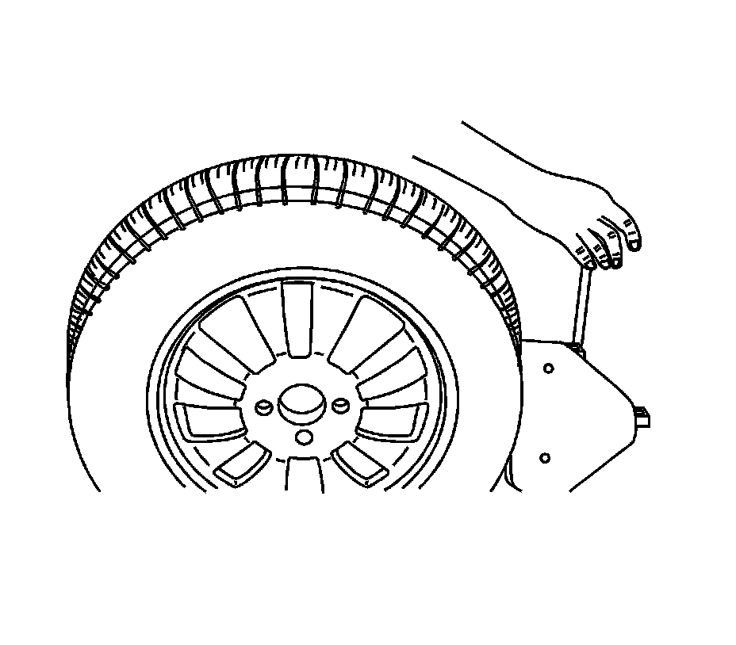
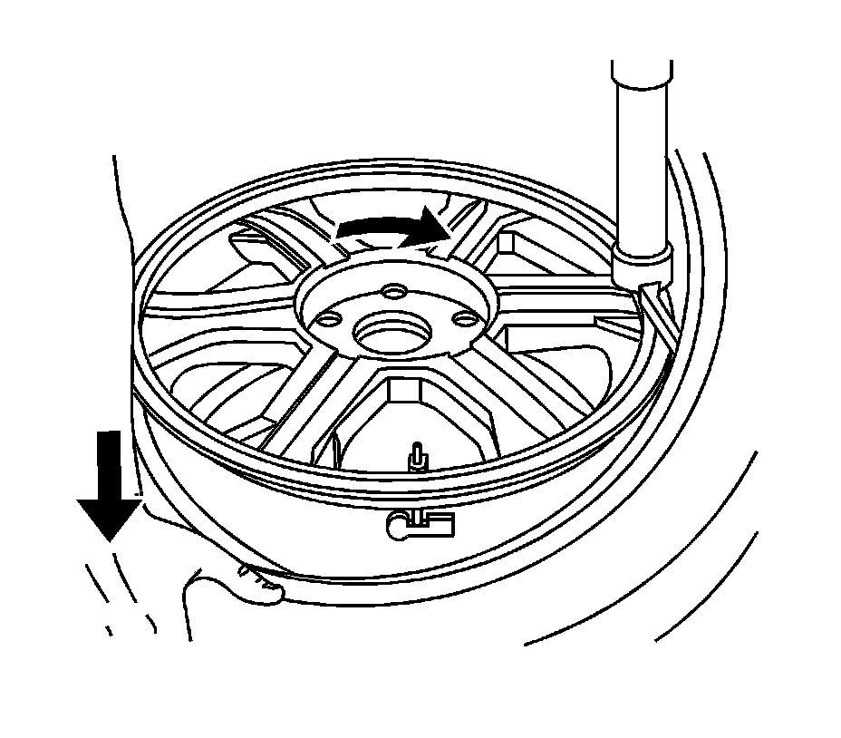
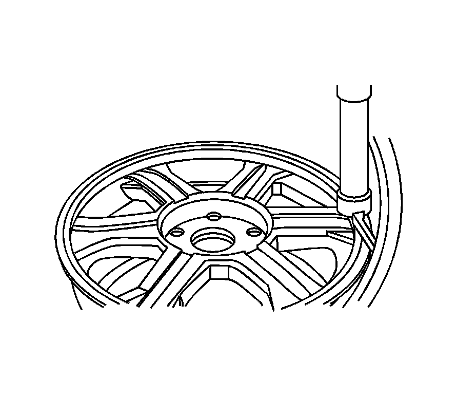
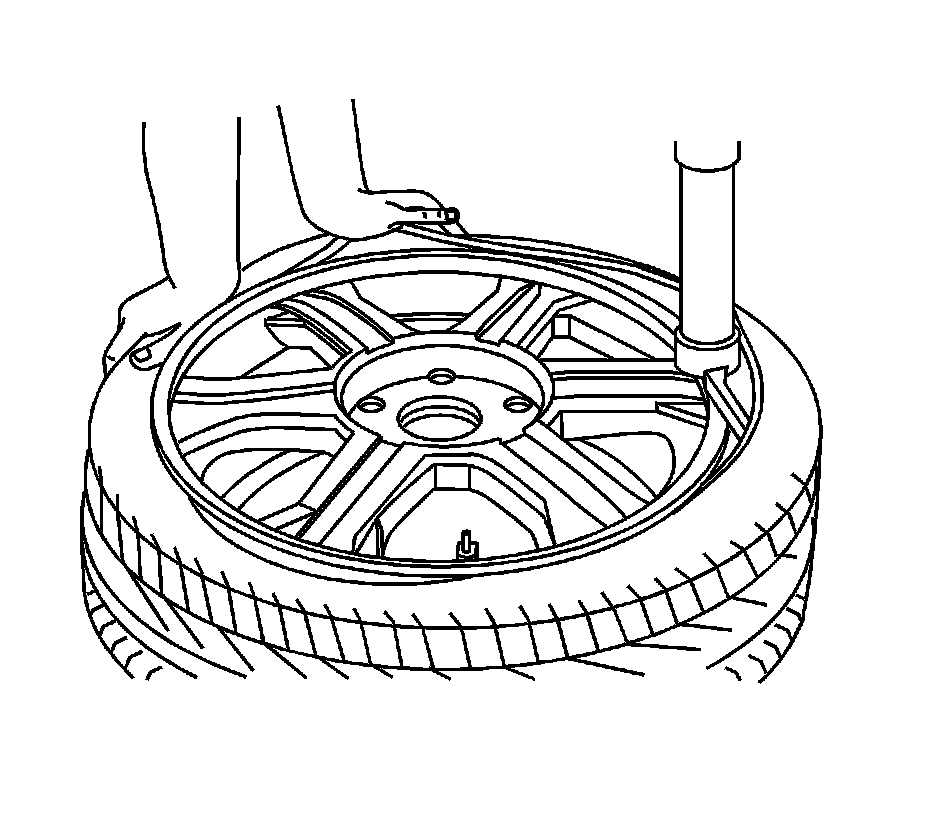

Tire Mounting and Dismounting
Tire Mounting and Dismounting
Notice: Use a tire changing machine in order to dismount tires. Do not use hand tools or tire irons alone in order to remove the tire from the wheel. Damage to the tire beads or the wheel rim could result.
Notice: Do not scratch or damage the clear coating on aluminum wheels with the tire changing equipment. Scratching the clear coating could cause the aluminum wheel to corrode and the clear coating to peel from the wheel.
Notice: Damage to either the tire bead or the wheel mounting holes can result from the use of improper wheel attachment or tire mounting procedures. It takes up to 70 seconds for all of the air to completely exhaust from a large tire. Failure to follow the proper procedures could cause the tire changer to put enough force on the tire to bend the wheel at the mounting surface. Such damage may result in vibration and/or shimmy, and under severe usage lead to wheel cracking.
1. Remove the valve core from the valve stem.
2. Deflate the tire completely.
Important: Rim-clamp European-type tire changers are recommended.
3. Use the tire changer in order to remove the tire from the wheel. Follow steps 4-7 to remove the tire from the wheel.

4. When Separating the tire bead from the wheel, position the bead breaking fixture 90, 180 and 270 degrees from the valve stem.

5. Position the wheel and tire so the valve stem is situated at the 2 o'clock position relative to the head. The tire iron or pry bar can be inserted when prying the outer tire bead up and over the mounting/dismounting head.

6. Position the wheel and tire so the valve stem is situated again at the 2 o'clock position relative to the head. The tire iron or pry bar can be inserted when prying the inner tire bead up and over the mounting/dismounting head.
7. Remove all residual liquid sealant from the inside of the tire and wheel surfaces. If any tire sealant is noted upon tire dismounting on vehicles equipped with TPM, replace the tire pressure sensor. Refer to Tire Pressure Sensor Replacement (Snap In Style) Tire Pressure Sensor Replacement (Clamp In Style).
8. Use a wire brush or coarse steel wool in order to remove any rubber, light rust or corrosion from the wheel bead seats.
Notice: When mounting the tires, use an approved tire mounting lubricant. DO NOT use silicon or corrosive base compounds to lubricate the tire bead and the wheel rim. A silicon base compound can cause the tire to slip on the rim. A corrosive type compound can cause tire or rim deterioration.
9. Apply GM P/N 12345884 (Canadian P/N 5728223,) or equivalent to the tire bead and the wheel rim.

10. Position the rim so the valve stem (1) is situated at the 3 o'clock position relative to the head (2). This will protect the sensor when the bottom bead seats.

11. Using the tire machine, rotate the tire/wheel assembly clockwise when transferring the tire bead to the inside of the wheel rim.

12. After the bottom bead is on the wheel, reposition the wheel and tire so that the valve stem is situated at the 9 o'clock position relative to the head. This will protect the sensor while mounting the tire bead to the outside of the wheel.

13. Use the tire changer in order to install the tire to the wheel.
Caution: To avoid serious personal injury, do not stand over tire when inflating. The bead may break when the bead snaps over the safety hump. Do not exceed 275 kPa (40 psi) pressure when inflating any tire if beads are not seated. If 275 kPa (40 psi) pressure will not seat the beads, deflate, relubricate the beads and reinflate. Overinflation may cause the bead to break and cause serious personal injury.
14. Inflate the tire until it passes the bead humps. Be sure that the valve core is not installed at this time.
15. Install the valve core to the valve core stem.
16. Inflate the tire to the proper air pressure.
17. Ensure that the locating rings are visible on both sides of the tire in order to verify that the tire bead is fully seated on the wheel.